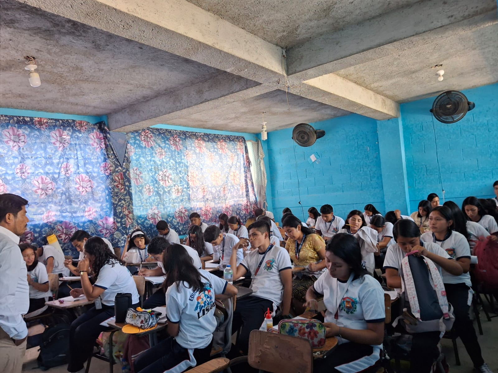
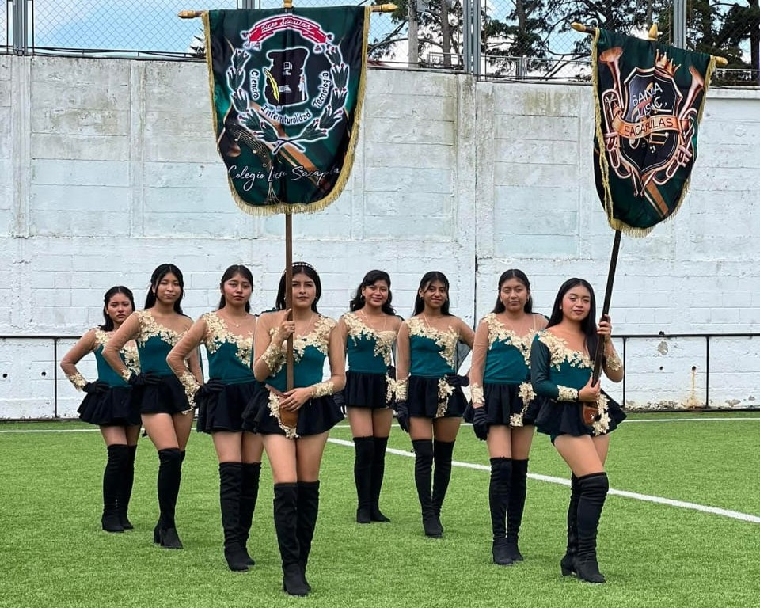
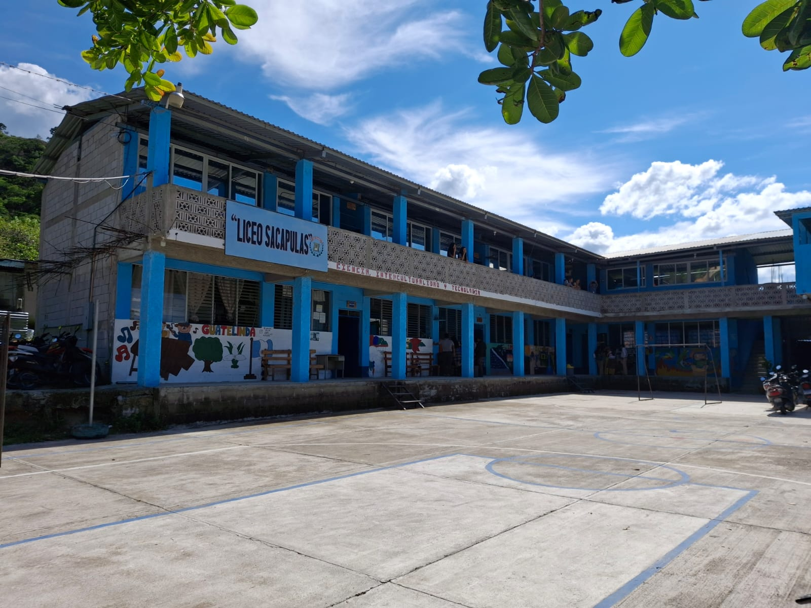

Bienvenido a la pagina web de Liceo Sacapulas



Visión
Es proyectar a la juventud Sakapulteka y su alrededor la Educación Bilingüe Intercultural del pensum de estudios para la vida personal, social y profesional y desarrollar valores culturales con habilidades y destrezas, en el conocimiento técnico, pedagógico y tecnológico.
Misión
Formar maestros y maestras de Educación Preprimaria Bilingüe Intercultural, Peritos Contadores con Orientación en Computación y Bachilleres en Ciencias y Letras con Orientación en Educación, con principios democráticos y científicos. Lideres, emprendedores y competentes en el uso de la tecnología, lectura y escritura del idioma sakapulteko, con pertinencia cultural en un mundo cambiante.